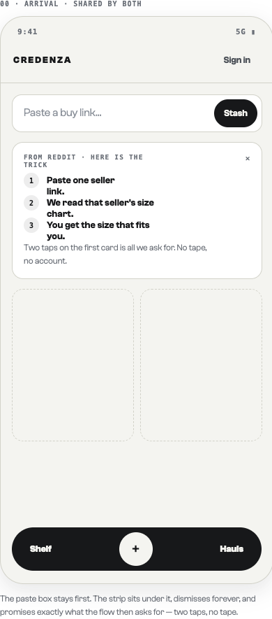
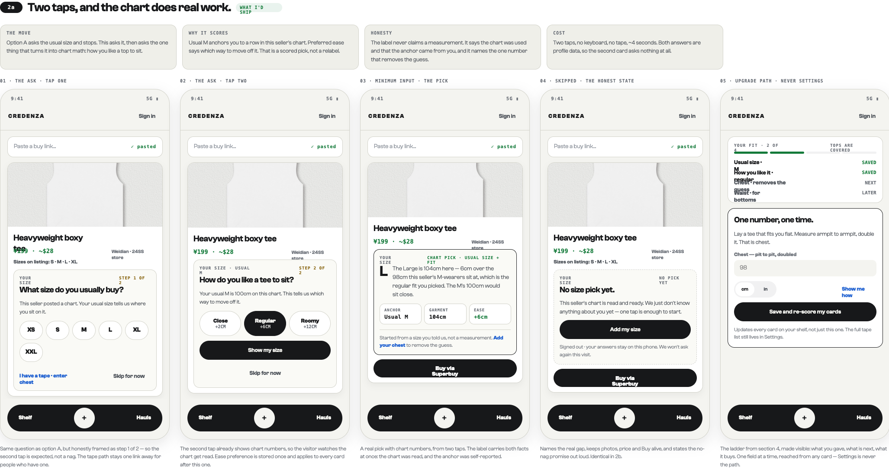
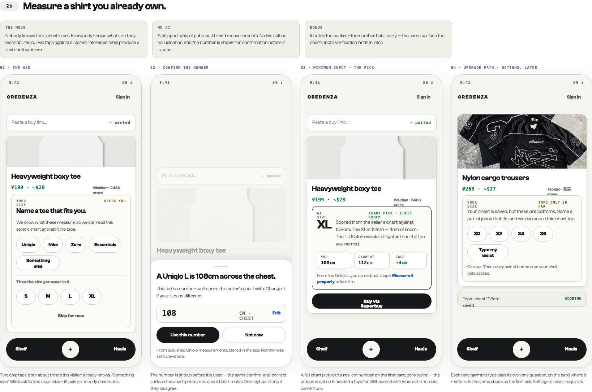

Two taps on the first card produce a chart-scored size pick. No tape, no keyboard, no account. This is the build spec for that flow, the states around it, and the copy that carries it.
Ship the two-tap anchor: usual size, then preferred ease. It is idea 1's interface plus one chip row, and it converts idea 1's disowned guess into real chart math. Idea 2's typed number survives as the "I have a tape" link. Idea 3's three-field panel is the Settings surface it already is, never a first-run gate.
A visitor arrives from a Reddit thread, pastes one link, and the card opens with nothing useful in the size block. Every idea on the table traded honesty against a tape measure: one tap gives a pick the product has to disown, one number needs a tape a visitor on the couch does not have, three fields need three of them. The two-tap anchor asks only about things the visitor already knows — what size they buy and how they like clothes to sit — and both answers feed the same chart arithmetic the product already runs.
| Approach | Cost to visitor | Pick quality | Verdict |
|---|---|---|---|
| Idea 1 · one tap | 1 tap | Relabel. Chart unread. | Cheap, but the card apologises for itself. |
| Idea 2 · one number | Tape + keyboard | Real chart pick. | Right answer, wrong moment. Keep as a link. |
| Idea 3 · three fields | Tape + 3 fields | Best available. | A form before a first result. Settings only. |
| Ship · two-tap anchor | 2 taps, ~4s | Chart-scored, anchor self-reported. | Idea 1's cost, close to idea 2's quality. |
Both asks are skippable, and a skip is final for that visit. Everything is stored locally; sign-in only syncs what already exists.
Ten frames, drawn at 390pt in Blackout and Gallery. A0–A5 are the shipping flow; B1–B4 are the phase-two reference anchor, specced here so the two do not diverge later. Every frame is in the design canvas under the matching id.
Masthead with Sign in · paste field (52px, 14px radius, 16px placeholder) · dismissible three-step strip · empty 2-up grid with dashed 4:5 placeholders · haul bar. The strip is the only new element: numbered rows 1/2/3, a close affordance, and the promise line "Two taps on the first card is all we ask for. No tape, no account." Dismissal is permanent, stored locally. No sizes ask lives here.
Card renders at full height with a 148px photo, title, price, seller, and a "Sizes on listing" line. The size block is an inset panel (14px radius, hairline, inset bg) holding: kicker "Your size" left, "Step 1 of 2" in warn ink right, the question at 19px display, one line of body, the chip row wrapped from the listing's own run, then a footer row with the tape link left and Skip for now right. Chips 44px tall, 54px min width, card-solid fill with hairline. Buy is not shown until a size exists.
Same panel, photo shrinks to 150px to make room. Kicker becomes "Your size · usual M" — the first answer is visibly held. Three ease chips at 58px tall, each two lines: label at 13px/700 over its cm delta in mono 10px. Selected chip inverts to ink fill. Below: full-width Show my size, then a centred Skip for now. The body line quotes this seller's chart number, which is what makes the second tap feel like progress rather than a second nag.
Panel border goes to 1px solid ink to mark it resolved. Header row: "Your size" left, "Chart pick · usual size + fit" in money right. Body: size at 34px display, beside one sentence of reasoning at 13.5px. Then three equal data tiles — anchor, garment, ease — in mono 13px, ease in money. A hairline separates the provenance line, which names the self-reported anchor and links "Add your chest". BuyButton sits under the panel. Photo drops to 126px.
Panel border becomes dashed, flag reads "No pick yet". Headline "No size pick yet." at 19px display, then the sentence that names the real gap — the chart is read, the visitor is unknown — one full-width Add my size, and the privacy plus no-nag line. Photo returns to full 176px and Buy stays live: skipping costs the visitor nothing except the pick. This frame is identical in the phase-two flow.
Reached from any provenance link, never from Settings. Top panel: "Your fit · 2 of 4" with a four-segment meter and four rows — usual size SAVED, how you like it SAVED, chest NEXT, waist LATER. Bottom panel (ink border): one Field with the pit-to-pit instruction, a cm/in segmented pair, full-width "Save and re-score my cards", and the line stating it updates every card on the shelf. One field per visit; the full tape list stays in Settings.
Same panel geometry as A1. Flag reads "Needs you". Two stacked chip rows separated by a hairline: brands (Uniqlo, Nike, Zara, Essentials, Something else) then the size worn in it. "Something else" falls through to A1/A2, so nobody dead-ends. Skip for now centred at the bottom.
The only sheet in the whole flow: 18px top corners, grab handle, headline stating the resolved measurement in plain words, the number itself at 22px mono in a bordered row with unit and Edit, then Use this number / Not now side by side. Footnote credits the published brand measurements and states nothing was sent anywhere. Reuse this surface for the chart-photo read.
Identical to A3 except the confidence flag reads "Chart pick · chest 108cm", the anchor tile becomes "You · 108cm", and the provenance line reads "From the Uniqlo L you named, not a tape" with a "Measure it properly" link. Photo 120px.
A bottoms card with a tops-only profile. Flag "Tops only so far", one sentence explaining why the saved chest does not apply, a numeric waist chip row plus a "Type my waist" chip, and the payoff line. A summary row under the card confirms tops are still scoring. Each garment class asks its own one question, on the card where it matters, in the shape of A1.
The anchor resolves to a body chest estimate; ease is the target gap between body and garment. Score every row in the seller's chart and take the smallest error.
body = anchorChest(usualSize, chartRow) || referenceTable(brand, size) || typedChest target = body + ease // close +2cm · regular +6cm · roomy +12cm pick = argmin(|row.chest - target|) over chart rows confid = typedChest ? "measured" : referenceTable ? "reference" : "self-reported"
Ease deltas are tops defaults; bottoms use waist with close +0 / regular +2 / roomy +5. Ease is stored once per garment class and reused on every subsequent card — the second card asks nothing.
Add "or name a tee you own" as a third option on the same block: brand chip plus size chip resolve against a shipped table of published brand measurements, producing a real cm number with zero typing. The number is always shown for confirmation before it is used — the same confirm-and-correct surface the chart-photo read should land in later. No live lookup, no model call.
| State | Trigger | Size block shows |
|---|---|---|
| Ask 1 | Chart present, no anchor | Size chips from the listing run · step 1 of 2 · tape link · skip |
| Ask 2 | Anchor set, no ease | Ease chips with cm deltas · chart number quoted · skip |
| Pick | Anchor + ease + chart | Size, reasoning, three tiles, provenance line, Buy |
| Skipped | Either ask dismissed | "No size pick yet." · names the real gap · one primary button · no-nag promise |
| No chart | Seller posted none | Usual size echoed, labelled "no chart · your usual size". No ease ask. |
| Wrong class | Bottoms, tops-only profile | One waist-anchor ask in the same shape as ask 1 |
| Returning | Profile in local storage | Pick immediately, no asks. Ladder rung offered once per session at most. |
| Slot | String |
|---|---|
| Ask 1 title | What size do you usually buy? |
| Ask 1 body | This seller posted a chart. Your usual size tells us where you sit on it. |
| Ask 2 title | How do you like a tee to sit? |
| Ask 2 body | Your usual M is 100cm on this chart. This tells us which way to move off it. |
| Pick reasoning | The Large is 104cm here — 6cm over the 98cm this seller's M-wearers sit at, which is the regular fit you picked. The M's 100cm would sit close. |
| Provenance | Started from a size you told us, not a measurement. Add your chest to remove the guess. |
| Skipped | No size pick yet. This seller's chart is read and ready. We just don't know anything about you yet — one tap is enough to start. |
| Privacy | Signed out · your answers stay on this phone. We won't ask again this visit. |
| Buttons | Show my size · Skip for now · Add my size · Save and re-score my cards · I have a tape · enter chest |
Profile shape, stored under one local key and synced verbatim on sign-in:
fit: {
unit: "cm",
tops: { usualSize: "M", ease: "regular", chest: null, source: "self" },
bottoms: { usualSize: null, ease: null, waist: null, source: null },
askedThisSession: ["tops.anchor", "tops.ease"],
skippedAt: null
}
skippedAt.Primary metric: share of first-paste sessions that reach a size pick. Secondary: taps to first pick (target 2), skip rate at ask 1 versus ask 2, ladder-rung completion within seven days, and Buy rate on cards with a pick versus without. Idea 1 would win the first metric and lose the last one; watch them together.
Captured from the design canvas at 1×. Use the canvas for pixel values; these are for reference in the room.


